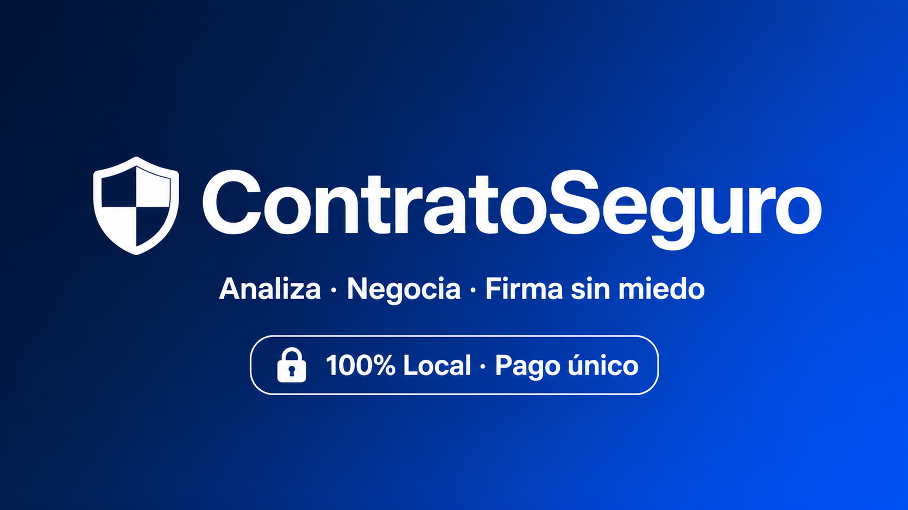

No firmes a ciegas
Vas a firmar un contrato de trabajo, un alquiler, un acuerdo de confidencialidad. ¿Y si esconde una cláusula que vulnera tus derechos o te hace perder dinero?
ContratoSeguro analiza cualquier contrato en cuestión de segundos. Detecta las cláusulas abusivas, te explica el riesgo en un lenguaje que entiendes y te sugiere cómo modificarlas antes de firmar. Sin abogados. Sin subir tus datos a la nube.
Lo que hace por ti
Detecta cláusulas abusivas según la legislación española vigente: Ley de Arrendamientos Urbanos, Estatuto de los Trabajadores, Texto Refundido de la Ley General para la Defensa de los Consumidores y Usuarios, entre otras.
Clasifica cada hallazgo con un semáforo de riesgo:
- Crítico: cláusula potencialmente abusiva, nula o de alto riesgo financiero.
- Precaución: redacción ambigua, demasiado general o interpretable en tu contra.
- Informativo: cláusula estándar que debes comprender bien antes de aceptar.
Sugiere un texto alternativo para cada cláusula conflictiva. Podrás llevarlo a la negociación con seguridad.
Elige el tono del análisis:
- Equilibrado: profesional, claro y directo.
- Beligerante: enérgico, combativo y sin concesiones.
- Didáctico: te explica cada punto como si fueses la primera vez que lees un contrato.
Incluye una biblioteca de cláusulas abusivas frecuentes, clasificada por tipo de contrato, para que puedas revisarla por tu cuenta incluso antes del análisis automático.
Genera un informe descargable en PDF con el veredicto, el análisis detallado y las cláusulas propuestas. Listo para guardar, imprimir o compartir.
100% privado · 100% local
ContratoSeguro no es una página web que sube tus contratos a un servidor ajeno. Es un archivo HTML que se ejecuta completamente en tu navegador, dentro de tu ordenador.
La herramienta funciona con tu propia clave de API de OpenAI. No almacenamos nada. No vemos nada. Tus documentos nunca abandonan tu equipo.
Tipos de contrato que analiza
- Laboral: cláusulas de no competencia, horas extra, período de prueba, plena dedicación, salario.
- Alquiler: fianza, gastos repercutidos, reparaciones, penalización por desistimiento, duración.
- Servicios / Autónomo: responsabilidad, plazos de pago, modificaciones unilaterales, propiedad intelectual.
- Confidencialidad: definición de información confidencial, duración, indemnizaciones, brechas de seguridad.
- Compraventa: arras, gastos notariales, vicios ocultos, plazos de entrega, sumisión a fuero.
Lo que recibes
Un archivo comprimido que contiene:
- La herramienta completa en formato HTML (se abre con cualquier navegador moderno).
- Un documento de instrucciones para empezar en menos de un minuto.
Pago único, sin suscripciones. Sin cuotas mensuales. Lo compras una vez y lo usas siempre.
Aviso importante
Esta herramienta utiliza inteligencia artificial para ofrecer una orientación preliminar basada en patrones contractuales frecuentes. No presta asesoramiento legal ni sustituye la revisión por un abogado colegiado. Ante cualquier duda fundada, debes consultar con un profesional del derecho.
Lo que dicen los usuarios
«Pensé que mi contrato de alquiler era estándar. Encontró una cláusula de penalización abusiva que me habría costado 3.200 euros. Me salvó.»
— Javier M., Madrid
«Lo usé para revisar mi contrato laboral antes de incorporarme. Señaló un pacto de no competencia sin compensación económica que era nulo. Lo negocié y lo retiraron.»
— Laura G., Barcelona
Empieza ahora
Analiza tu contrato en minutos. Negocia con argumentos. Firma sin miedo.